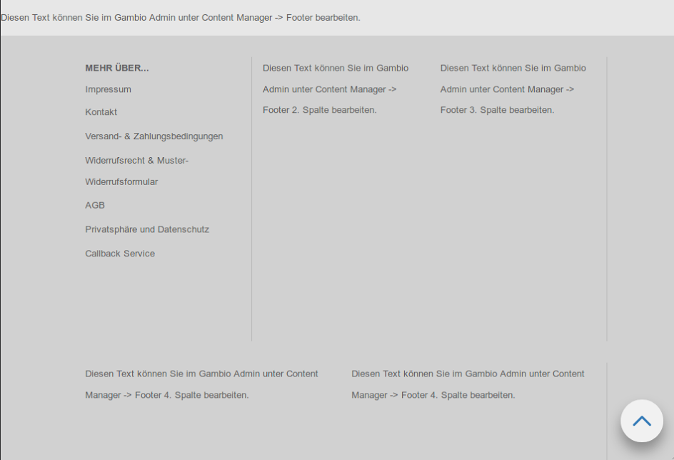

Einbindung von Content Manager Inhalten¶
Wer bereits etwas mit dem Shop gearbeitet hat, kennt den Content Manager. Er ist die Schaltzentrale, wenn es darum geht eigene Inhalte im Shop zu platzieren. Hierbei ist es möglich, entweder ganze Seiten selbst zu schreiben und diese zu verlinken oder in bestimmten, vorgegebenen Positionen zu platzieren (wie z.B. auf der Startseite, im Header oder im Footer). Es ist aber auch möglich, eigene Seitenelemente zu erstellen, welche man dann später an beliebigen Stellen in einem Template oder Theme eingebunden werden kann.
Inhalt:
Arbeiten im Gambio Admin¶
Beginnen wir zunächst mit dem einfachen Teil, dem Schreiben der benötigten Contents. Ruft dafür den Content Manager über Darstellung > Content Manager auf und wechselt in den Tab "Elemente". Hier findet ihr alle Seitenelemente vor, die der Shop von sich aus ausliefert. Diese können natürlich auch verwendet werden, um den gewünschten Inhalt anzuzeigen. Wollt ihr das allerdings ein bisschen besser aufteilen, dann müssen noch weitere Contents angelegt werden.
Erstellen eines neuen Startseitencontents¶
Beginnen wir damit einen neuen Content auf der Startseite zu platzieren. Klickt auf den Erstellen-Button, der sich rechts neben der Überschrift "Startseite" befindet, um einen neuen Startseitencontent zu erstellen.
Das Feld "Interner Name" gibt hier vor, wie der Content in der Übersicht gelistet wird, eine Anzeige im Frontend findet hier nicht statt. Gebt dem Content daher am besten einen Namen, den man möglichst gut wiederfindet und bei dem man weiß, wo er sich auf der Seite befindet, um euch später unnötige Sucherei zu ersparen, wenn ihr den Content mal bearbeiten oder löschen wollt.
Der Schalter "sichtbar" gibt an, ob der Content im Frontend angezeigt werden soll oder nicht. Eine praktische Option, wenn man erstmal einen Text schreiben, aber erst später für alle lesbar machen möchte oder man saisonale Texte im Shop verwendet, die man wiederverwenden kann.
Darunter findet sich dann das Eingabefeld für den eigentlichen Text. Hier habt ihr die Möglichkeit, einen WYSIWIG-Editor zu verwenden oder auf einen HTML-Editor umzuschalten, wenn ihr bestimmte Formatierungen per HTML und CSS erreichen wollt, da diese im WYSIWIG-Editor gefiltert werden.
Nachdem ihr euren Content erstellt und sichtbar geschaltet habt, ist im Admin alles getan und der Content kann im Frontend eingebunden werden.
Erstellen eines neuen Headercontents¶
Bisher gibt es zum Platzieren von eigenem Inhalt im Header nur den Content "Header". Möchte man aber weiteren Content an anderer Stelle im Header platzieren, so war dies erstmal nicht ohne Weiteres möglich.
Über den Admin ist es nun möglich eigene Contents für den Header zu erstellen. Diese können dann mit ein paar Anpassungen am HTML und CSS des Headers im Shop verbaut werden.
Das Vorgehen ist hier das gleiche, wie schon für die Startseitencontents beschrieben. Bei Klick auf den Erstellen-Button neben der Überschrift "Header" öffnet sich das gleiche Eingabeformular wie zum Erstellen der Startseitencontents.
Erstellen eines neuen Footercontents¶
Vier Spalten im Footer sind euch nicht genug oder ihr braucht eine weitere Reihe mit zusätzlichen Spalten? Kein Problem! Legt euch im Content Manager im Bereich Footer einfach die Elemente an, die ihr benötigt und füllt sie mit Inhalt. Die Einbindung im Template erkläre ich euch später ;).
Die Oberfläche zum Anlegen neuer Footercontents ist die gleiche, wie oben schon beschrieben.
Erstellen eines beliebig platzierbaren Contents¶
Der Bereich für beliebig im Shop platzierbare Contents ist "Sonstiges" in der Elemente-Übersicht. Hier sollten alle Contents abgelegt werden, die an unterschiedlichen Stellen des Shops Verwendung finden sollen und nicht durch die anderen Kategorien abgedeckt werden. Bitte denkt hier besonders daran, Namen zu vergeben, von denen man auf die Position der Contents im Shop schließen kann, damit man diese wiederfindet, wenn man etwas bearbeiten oder löschen möchte.
Auch hier ist das Vorgehen analog zu den anderen Contents. Erstellt euch einen Content im Bereich Sonstiges füllt ihn mit Inhalt und schaltet ihn sichtbar, damit er im Shop später angezeigt werden kann.
Erstellen einer neuen Box¶
Hinweis: Das Erstellen von neuen Boxen ist leider noch etwas komplizierter und ist erstmal nur für fortgeschrittene Nutzer gedacht. Sobald es hier einen einfacheren Weg gibt, wird das Tutorial an dieser Stelle aktualisiert.
Wer sich zutraut mehr als nur eine HTML-Datei anzupassen, hat auch die Möglichkeit eine neue Box über den Content Manager mit Inhalt zu füllen. Die Arbeiten im Admin halten sich dabei gering. Legt im Bereich Boxen des Content Managers einen neuen Content an, befüllt ihn mit Inhalt und schaltet ihn sichtbar. Das war es dann auch schon, was wir im Admin dafür tun mussten. Der Rest wird dann an anderer Stelle erledigt.
Auch hier ist die Oberfläche zum Anlegen neuer Contents die gleiche, wie oben schon beschrieben.
Arbeiten im Frontend des Shops¶
Nun geht es ans Eingemachte. Bisher haben wir nur neue Contents in der Datenbank. Der Shop weiß jetzt allerdings noch nicht, was er damit überhaupt tun soll. In den folgenden Schritten zeige ich euch, wie wir dem Shop beibringen, die neuen Contents aus der Datenbank im Frontend anzuzeigen.
Dafür brauchen wir eigentlich nur eine kleine Funktion, die wir mit dem Shop ausliefern: Ein Smarty-Plugin mit dem
passenden Namen {content_manager}.
Dieses übernimmt im folgenden die hauptsächliche Arbeit. Was ihr zur Verwendung lediglich braucht ist die
content_group_id des betreffenden Contents.
Diese findet ihr, wenn ihr in der Übersicht der Content Elemente mit der Maus auf einen Content geht. In dem sich
öffnenden Tooltip steht dann die content_group_id.
Abb 1: Wenn ihr mit der Maus über eine Content-Zeile hovert wird die ID des Contents eingeblendet
Wenn ihr Änderungen im HTML vornehmt, empfiehlt es sich die Verwendung von Smarty-Blöcken zum Überladen von Template-Dateien zu verwenden, damit die Änderungen, die ihr macht, nicht bei einem Update überschrieben werden. Mehr zu diesem Thema findest du im Abschnitt Anlegen neuer HTML Inhalte.
Anpassen der Startseite¶
Besorgt euch die IDs der Contents, die ihr auf der Startseite einbauen wollt, wie eben beschrieben und notiert euch
diese. Die Datei, die für die Einbindung der Contents auf der Startseite angepasst werden muss, ist die
templates/Honeygrid/modules/main_content.html.
Wollen wir einen Content z.B. nach dem Begrüßungstext aus dem Content "Index" und den Artikelankündigungen platzieren, verwenden wir den Smarty Block module_main_content_main_text:
{block name="module_main_content_main_text" append}
{content_manager group=1234}
{/block}
Die Zahl, die ihr bei group= eintragt ist die ID des Contents, den ihr an der Stelle einbinden wollt. Das
Smarty-Plugin kümmert sich dann um die sprachabhängige Einbindung des Contents.
Anpassen des Headers¶
Um Contents im Header hinzuzufügen, bedienen wir uns etwas HTML, welches wir schon für den anderen freien Content im Header verwenden. Hierdurch sparen wir uns erheblichen Aufwand, da wir im folgenden kein CSS anpassen müssen. Die Einbindung funktioniert hier wie folgt:
{include file="get_usermod:{$tpl_path}snippets/header/header_custom_content.html" content={content_manager group=1234}}
Auch hier finden wir unser Smarty-Plugin, welchem wir unsere notierte ID übergeben können. Das zu bearbeitende Template
wäre in diesem Fall templates/Honeygrid/index.html.
Wollen wir zum Beispiel einen weiteren Content nach dem Logo platzieren, könnte das wie folgt realisiert werden:
{block name="index_outer_wrapper_header_inside_header" append}
{include file="get_usermod:{$tpl_path}snippets/header/header_custom_content.html" content={content_manager group=12345}}
{/block}
Nachdem wir nun mehr Platz im Header verbrauchen, als eigentlich vorgesehen, muss die Spaltenanzahl der Headerelemente noch angepasst werden. Dafür ruft ihr den StyleEdit 3 auf und passt unter "Header" alle Elemente so an, dass die Anzahl der Grid-Spalten in der Summe 12 ergeben.
Achtung: Bedenkt dabei, dass ihr den Bereich "Freigestaltbarer Bereich" nun zwei mal habt, sodass die Grid-Spalten-Anzahl in unserem Beispiel doppelt gezählt werden müssen.
Anpassen des Footers¶
Alle Templateanpassungen werden in templates/Honeygrid/module/footer.html erledigt. Sollten noch weitere
Anpassungen an anderen Stellen notwendig sein, werde ich im jeweiligen Beispiel darauf hinweisen.
Hinzufügen eines weiteren Contents in eine bestehende Footerspalte¶
Möchte man die Inhalte in einer Footerspalte logisch voneinander trennen oder zusätzlichen Text in der ersten Footerspalte platzieren, empfiehlt es sich mehrere Contents in einer Footerspalte einzubinden. Um das zu erreichen können wir einfach mehrfach das Smarty-Plugin anwenden. Dafür brauchen wir wieder die ID des gewünschten Contents. Auch diese könnt ihr euch besorgen, wie vorher beschrieben.
Anschließend binden wir dann das Smarty-Plugin in der Footerspalte ein, wo der Content hin soll. In folgendem Beispiel ist das die erste Spalte unter dem Inhalt der "Mehr über"-Box, die standardmäßig in der ersten Spalte angezeigt wird. Das resultierende HTML sieht dann wie folgt aus:
{block name="module_footer_inside_content1" append}
<div class="footer-col-1">
{$MORE_ABOUT}
{content_manager group=12345}
</div>
{/block}
Hinzufügen einer weiteren Spalte mit eigenem Content¶
Das Hinzufügen weiterer Spalten für neue Contents ist prinzipiell möglich, erfordert dann allerdings noch weitere Anpassungen am CSS, damit die Spaltenaufteilung richtig funktioniert. Zunächst notiert euch erstmal wieder die IDs der Contents, die ihr in weiteren Spalten einbinden wollt.
Anschließend passen wir das Template wie folgt an:
{block name="module_footer_inside_content1" append}
<div class="footer-col-5">{content_manager group=12345}</div>
{/block}
Damit es nun zu keiner Fehldarstellung durch überschreiten der Grid-Spaltenwerte kommt, muss der bestehende Style und das CSS angepasst beziehungsweise erweitert werden. Dafür gehen wir wie folgt vor: Wechselt in den StyleEdit 3 und öffnet dort das Fenster zum Eingeben von eigenem CSS. Hier fügen wir folgendes CSS ein:
#footer {
.footer-col-5 {
height: $gx-footer-height;
p {
line-height: $gx-footer-line-height;
}
a {
&:not(.social-media-icons a) {
color: $gx-footer-link-color;
}
}
@media (min-width: $screen-sm-min) {
min-height: ($gx-footer-min-height - 100);
}
@include make-xs-column(12);
@include make-sm-column(6);
@include make-lg-column(3);
}
}
Dieses CSS übernimmt weitestgehend die Styles der anderen Footerspalten und gibt der neu erstellten Spalte mit der
Klasse footer-col-5 folgende Spaltenverteilungen:
- Auf Smartphones verwende die komplette Breite, also alle zwölf Spalten.
- Auf Tablets verwende die halbe Breite, also sechs Spalten.
- Auf Desktops verwende ein Viertel der Breite, also drei Spalten.
Wollt ihr hier eine andere Spaltenverteilung erreichen sind die Werte für folgende Bereiche anzupassen:
@include make-xs-column(12);
@include make-sm-column(6);
@include make-lg-column(3);
Die Zahlen in den Klammern geben hierbei an, wie viele Spalten verwendet werden sollen. Beachtet dabei, dass die Gesamtanzahl an Spalten pro Zeile den Wert zwölf nicht übersteigen dürfen, wenn alle Spalten in einer Zeile angezeigt werden sollen.
Damit das auch mit den anderen Spalten gut aussieht, müssen diese im StyleEdit 3 angepasst werden. Unter Footer > Footer Spalte 1 bis Footer Spalte 4 findet ihr die Optionen zum Einstellen der Gridspalten. Für mein Beispiel habe ich folgende Einstellungen verwendet:
- Spalte 1:
- Grid-Spalten klein: 12
- Grid-Spalten medium: 4
- Grid-Spalten groß: 2
- Spalte 2:
- Grid-Spalten klein: 12
- Grid-Spalten medium: 4
- Grid-Spalten groß: 2
- Spalte 3:
- Grid-Spalten klein: 12
- Grid-Spalten medium: 4
- Grid-Spalten groß: 2
- Spalte 4:
- Grid-Spalten klein: 12
- Grid-Spalten medium: 6
- Grid-Spalten groß: 3
Das Ergebnis dieser Einstellungen, zusammen mit der zusätzlichen Spalte lässt sich am besten mit Bildern zeigen:
Abb 2: Auf dem Desktop sind die vorderen drei Spalten wie konfiguriert nun kleiner, während die beiden hinteren mehr Platz verwenden

Abb 3: Auf Tablet ergibt sich folgende Darstellung: In der ersten Zeile befinden sich nun die ersten drei Spalten, während in der unteren Zeile die beiden letzte Spalten sich die Breite des Footers teilen.